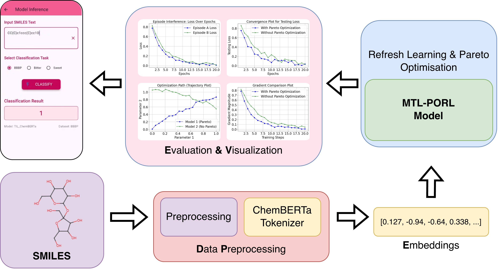
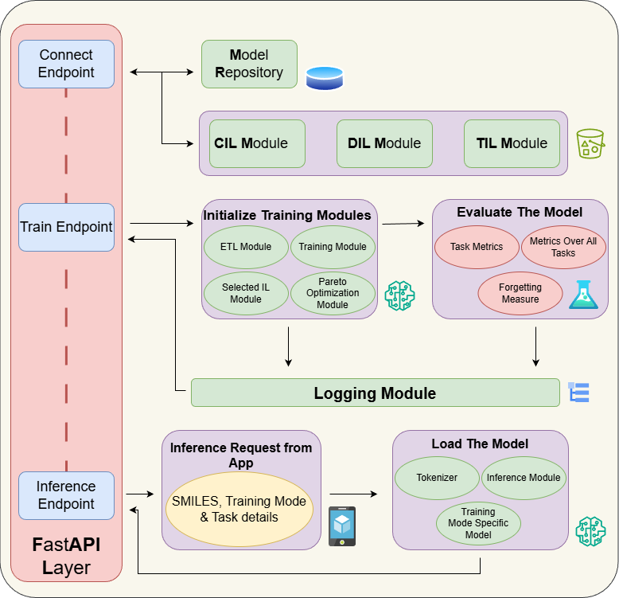
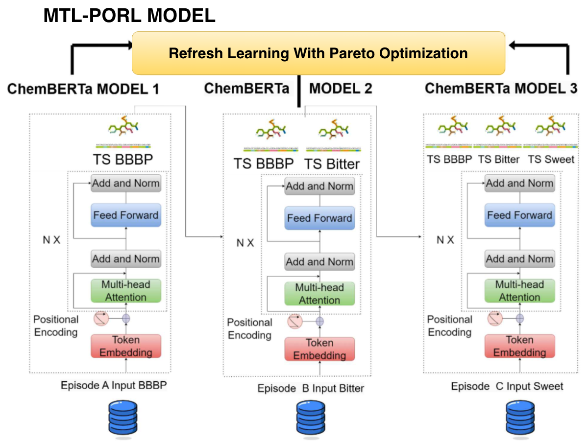
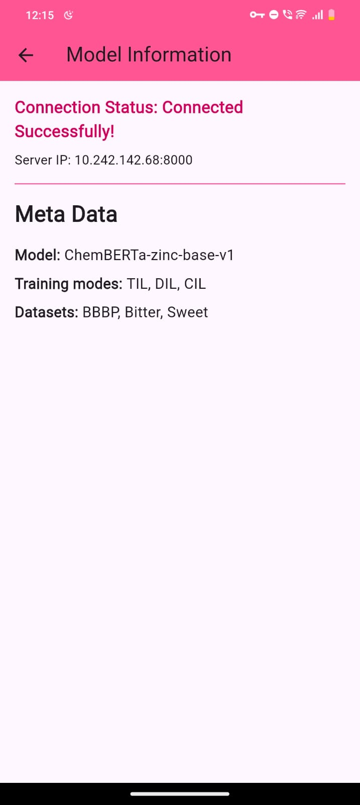
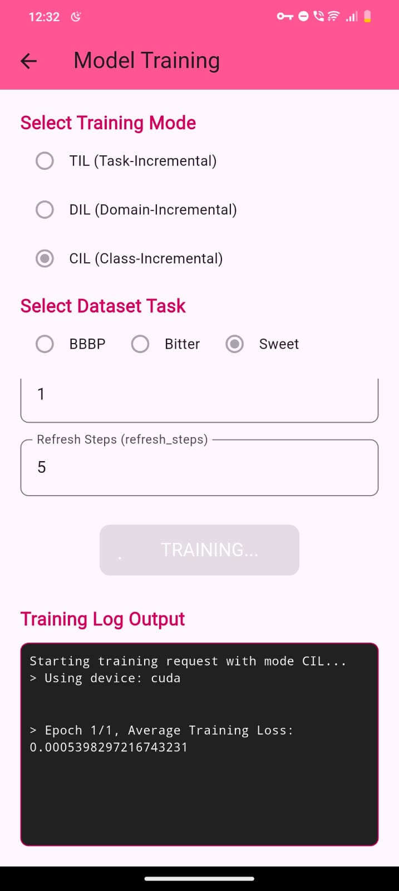
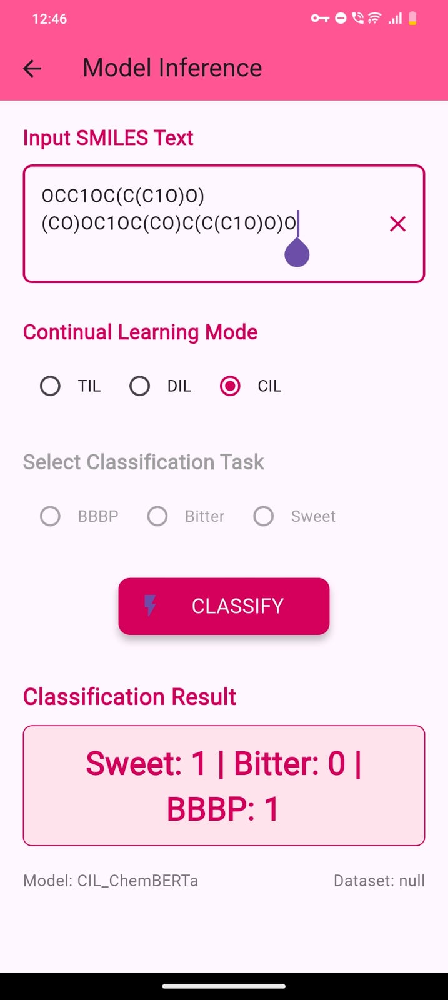
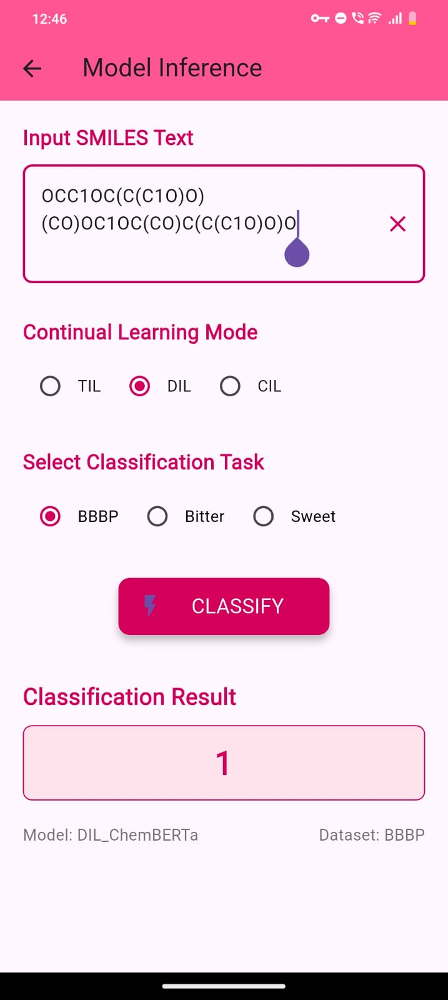
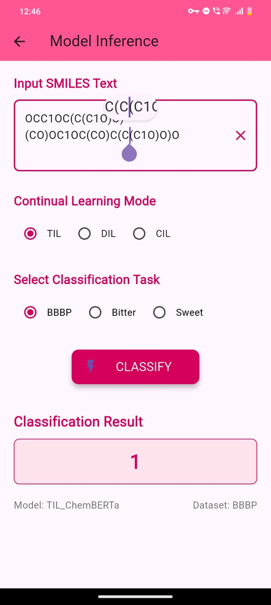

The work focuses on Artificial Intelligence and Computational Drug Discovery, particularly Continual Learning for Molecular Property Prediction using transformer-based molecular language models. It introduces a Multi-Task Learning framework combining Pareto Optimization (PO) with Refresh Learning (RL) to mitigate catastrophic forgetting during sequential learning across molecular property prediction tasks.
MTL-PORL is a Continual Learning framework for molecular property prediction designed to enable a model to learn sequential tasks while retaining useful knowledge from previously learned tasks.
The framework combines a bounded memory buffer with Refresh Learning, periodically revisiting representative samples from previously encountered tasks to reduce catastrophic forgetting.
Pareto Optimization is used to balance the competing learning objectives arising during continual training, allowing the model to adapt to the current task while preserving performance on previously learned tasks.
The framework utilizes three curated SMILES-based molecular datasets to evaluate continual learning across molecular property prediction tasks:
The datasets are preprocessed using standardized SMILES canonicalization and molecular tokenization to provide consistent molecular representations across sequential learning tasks.
During sequential training, representative samples from previously encountered tasks are retained in a bounded memory buffer.
Refresh Learning periodically revisits these retained samples to reinforce previously learned representations and reduce degradation in performance caused by continual adaptation to new tasks.
This provides a practical stability mechanism while allowing the model to continue adapting to incoming molecular property prediction tasks.
Continual learning introduces competing objectives: the model must learn the current task effectively while retaining performance on previously learned tasks.
MTL-PORL applies Pareto-based optimization to balance these competing objectives during model training. Task-specific gradients are combined according to optimized weighting coefficients rather than relying on a fixed manually selected weighting scheme.
This provides a mechanism for controlling the trade-off between adaptation to new tasks and retention of previously acquired knowledge.
The framework comprises four primary modules:
The resulting system provides an end-to-end platform for evaluating Pareto-based continual learning and Refresh Learning for molecular property prediction.
The training process follows a sequential task-learning workflow:








